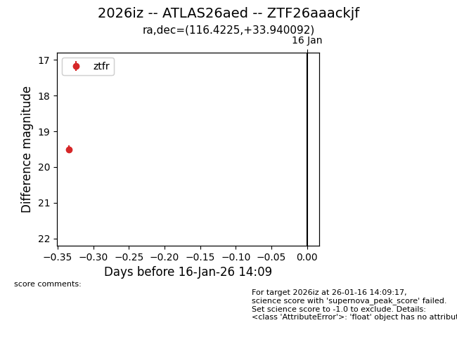
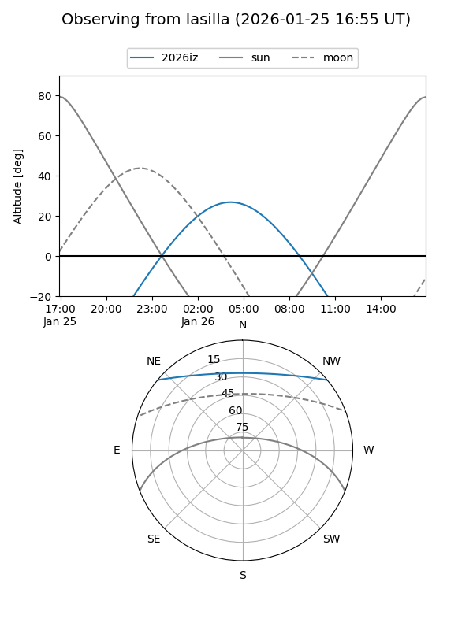
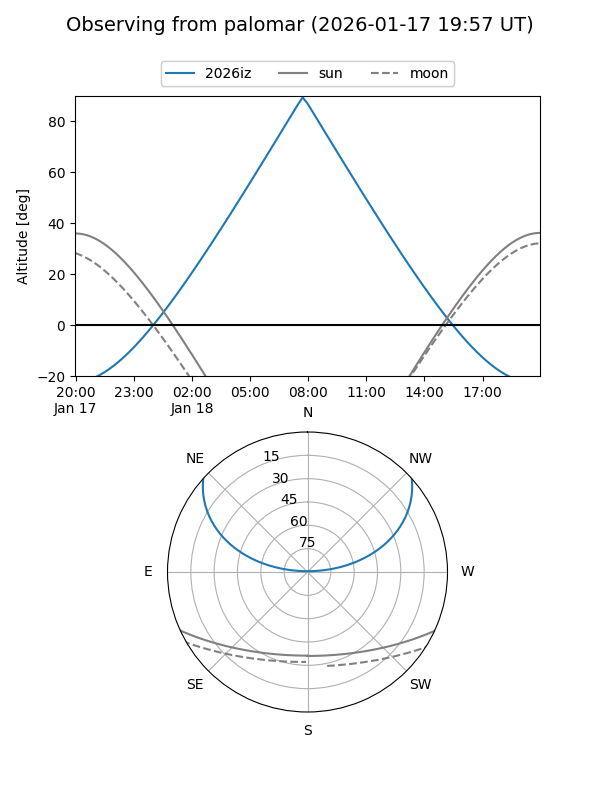
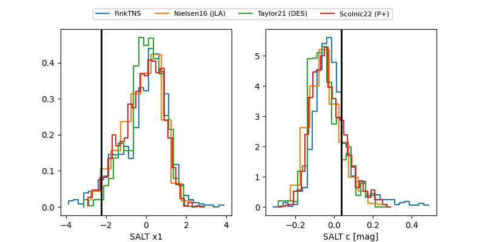

2026iz
Target 2026iz at 2026-01-25 23:16
Aliases and brokers:
FINK: link
Lasair: link
ALeRCE: link
TNS: link
YSE: link
alt names
ZTF26aaackjf (ztf,fink_ztf)
2026iz (tns,yse)
ATLAS26aed (atlas)
Coordinates:
equatorial (ra, dec) = 116.4225,+33.94009
equatorial (HMS+DMS) = 07:45:41.41,+33:56:24.33
galactic (l, b) = (186.0865,+25.32440)
Flags:
Photometry:
last ztfr=19.72
3 ztfr detections
Lightcurve

Visibility


Additional plots
